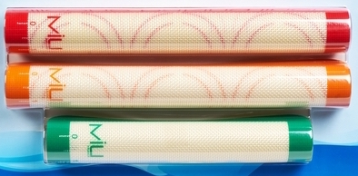
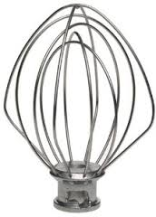

Hand Wash
The following have specific hand washing instructions. Please follow them on your dish night.

Cleaning
Use soap and water to clean.
Do not use scouring pads as it will damage the silicone.
Wipe dry and store flat or rolled
DO NOT
Use as a cutting board or cut with scissors as it will damage the liner

Hand wash only!
Washing in the dishwasher will cause wire whip to discolor. After washing, dry thoroughly.